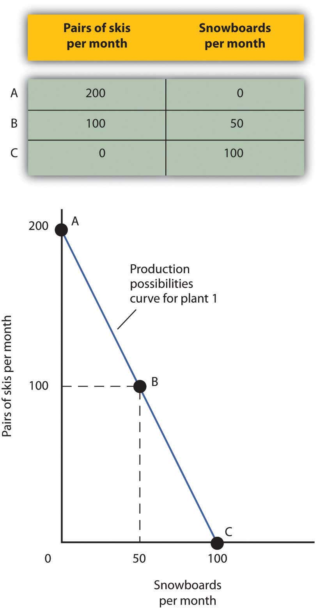
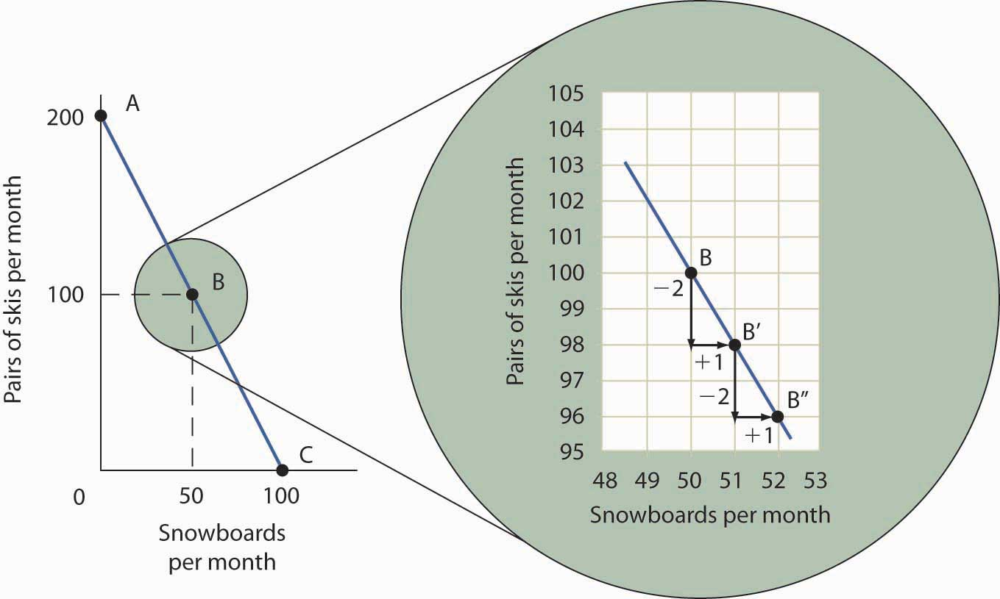
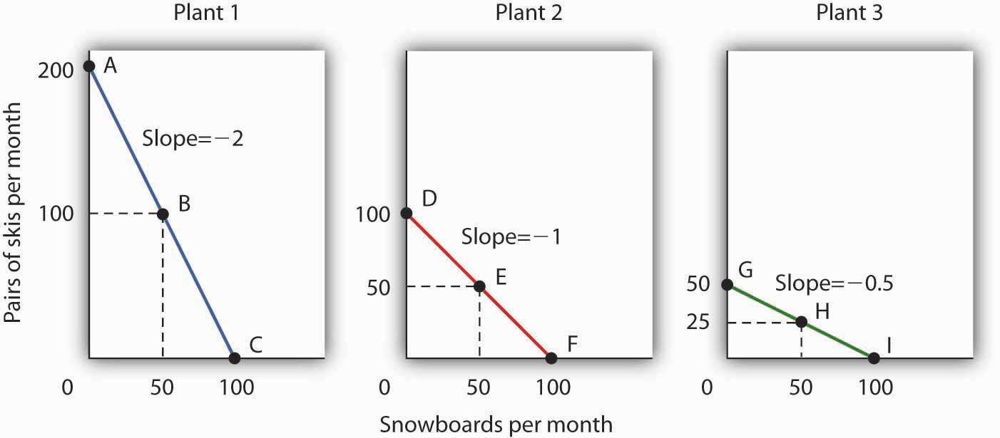
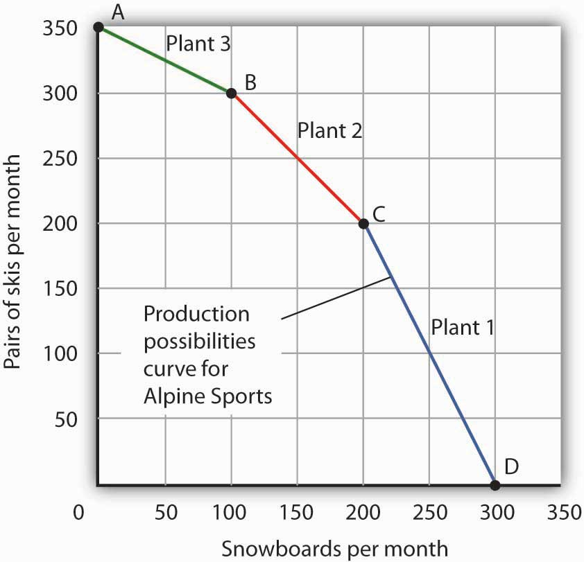
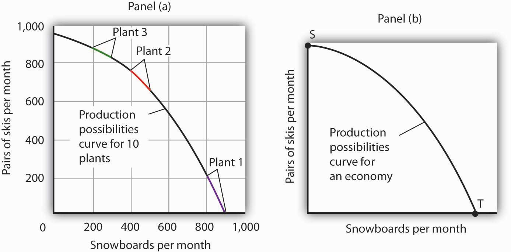
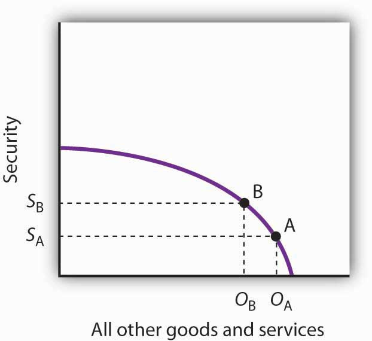
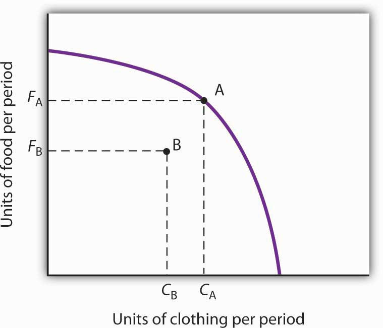
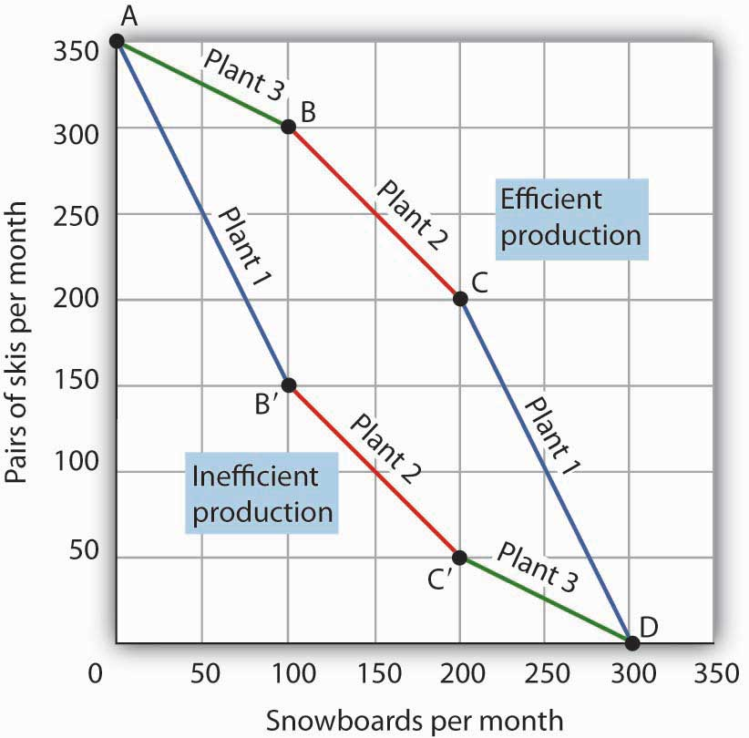

An economy’s factors of production are scarce; they cannot produce an unlimited quantity of goods and services. A production possibilities curveA graphical representation of the alternative combinations of goods and services an economy can produce. is a graphical representation of the alternative combinations of goods and services an economy can produce. It illustrates the production possibilities model. In drawing the production possibilities curve, we shall assume that the economy can produce only two goods and that the quantities of factors of production and the technology available to the economy are fixed.
To construct a production possibilities curve, we will begin with the case of a hypothetical firm, Alpine Sports, Inc., a specialized sports equipment manufacturer. Christie Ryder began the business 15 years ago with a single ski production facility near Killington ski resort in central Vermont. Ski sales grew, and she also saw demand for snowboards rising—particularly after snowboard competition events were included in the 2002 Winter Olympics in Salt Lake City. She added a second plant in a nearby town. The second plant, while smaller than the first, was designed to produce snowboards as well as skis. She also modified the first plant so that it could produce both snowboards and skis. Two years later she added a third plant in another town. While even smaller than the second plant, the third was primarily designed for snowboard production but could also produce skis.
We can think of each of Ms. Ryder’s three plants as a miniature economy and analyze them using the production possibilities model. We assume that the factors of production and technology available to each of the plants operated by Alpine Sports are unchanged.
Suppose the first plant, Plant 1, can produce 200 pairs of skis per month when it produces only skis. When devoted solely to snowboards, it produces 100 snowboards per month. It can produce skis and snowboards simultaneously as well.
The table in Figure 2.1 "A Production Possibilities Curve" gives three combinations of skis and snowboards that Plant 1 can produce each month. Combination A involves devoting the plant entirely to ski production; combination C means shifting all of the plant’s resources to snowboard production; combination B involves the production of both goods. These values are plotted in a production possibilities curve for Plant 1. The curve is a downward-sloping straight line, indicating we have assumed that there is a linear, negative relationship between the production of the two goods.
Neither skis nor snowboards is an independent or a dependent variable in the production possibilities model; we can assign either one to the vertical or to the horizontal axis. Here, we have placed the number of pairs of skis produced per month on the vertical axis and the number of snowboards produced per month on the horizontal axis.
The negative slope of the production possibilities curve reflects the scarcity of the plant’s capital and labor. Producing more snowboards requires shifting resources out of ski production and thus producing fewer skis. Producing more skis requires shifting resources out of snowboard production and thus producing fewer snowboards.
The slope of Plant 1’s production possibilities curve measures the rate at which Alpine Sports must give up ski production to produce additional snowboards. Because the production possibilities curve for Plant 1 is linear, we can compute the slope between any two points on the curve and get the same result. Between points A and B, for example, the slope equals −2 pairs of skis/snowboard (equals −100 pairs of skis/50 snowboards). (Many students are helped when told to read this result as “−2 pairs of skis per snowboard.”) We get the same value between points B and C, and between points A and C.
Figure 2.1 A Production Possibilities Curve
The table shows the combinations of pairs of skis and snowboards that Plant 1 is capable of producing each month. These are also illustrated with a production possibilities curve. Notice that this curve is linear.
To see this relationship more clearly, examine Figure 2.2 "The Slope of a Production Possibilities Curve". Suppose Plant 1 is producing 100 pairs of skis and 50 snowboards per month at point B. Now consider what would happen if Ms. Ryder decided to produce 1 more snowboard per month. The segment of the curve around point B is magnified in Figure 2.2 "The Slope of a Production Possibilities Curve". The slope between points B and B′ is −2 pairs of skis/snowboard. Producing 1 additional snowboard at point B′ requires giving up 2 pairs of skis. We can think of this as the opportunity cost of producing an additional snowboard at Plant 1. This opportunity cost equals the absolute value of the slope of the production possibilities curve.
Figure 2.2 The Slope of a Production Possibilities Curve
The slope of the linear production possibilities curve in Figure 2.1 "A Production Possibilities Curve" is constant; it is −2 pairs of skis/snowboard. In the section of the curve shown here, the slope can be calculated between points B and B′. Expanding snowboard production to 51 snowboards per month from 50 snowboards per month requires a reduction in ski production to 98 pairs of skis per month from 100 pairs. The slope equals −2 pairs of skis/snowboard (that is, it must give up two pairs of skis to free up the resources necessary to produce one additional snowboard). To shift from B′ to B″, Alpine Sports must give up two more pairs of skis per snowboard. The absolute value of the slope of a production possibilities curve measures the opportunity cost of an additional unit of the good on the horizontal axis measured in terms of the quantity of the good on the vertical axis that must be forgone.
The absolute value of the slope of any production possibilities curve equals the opportunity cost of an additional unit of the good on the horizontal axis. It is the amount of the good on the vertical axis that must be given up in order to free up the resources required to produce one more unit of the good on the horizontal axis. We will make use of this important fact as we continue our investigation of the production possibilities curve.
Figure 2.3 "Production Possibilities at Three Plants" shows production possibilities curves for each of the firm’s three plants. Each of the plants, if devoted entirely to snowboards, could produce 100 snowboards. Plants 2 and 3, if devoted exclusively to ski production, can produce 100 and 50 pairs of skis per month, respectively. The exhibit gives the slopes of the production possibilities curves for each plant. The opportunity cost of an additional snowboard at each plant equals the absolute values of these slopes (that is, the number of pairs of skis that must be given up per snowboard).
Figure 2.3 Production Possibilities at Three Plants
The slopes of the production possibilities curves for each plant differ. The steeper the curve, the greater the opportunity cost of an additional snowboard. Here, the opportunity cost is lowest at Plant 3 and greatest at Plant 1.
The exhibit gives the slopes of the production possibilities curves for each of the firm’s three plants. The opportunity cost of an additional snowboard at each plant equals the absolute values of these slopes. More generally, the absolute value of the slope of any production possibilities curve at any point gives the opportunity cost of an additional unit of the good on the horizontal axis, measured in terms of the number of units of the good on the vertical axis that must be forgone.
The greater the absolute value of the slope of the production possibilities curve, the greater the opportunity cost will be. The plant for which the opportunity cost of an additional snowboard is greatest is the plant with the steepest production possibilities curve; the plant for which the opportunity cost is lowest is the plant with the flattest production possibilities curve. The plant with the lowest opportunity cost of producing snowboards is Plant 3; its slope of −0.5 means that Ms. Ryder’s firm must give up half a pair of skis in that plant to produce an additional snowboard. In Plant 2, she must give up one pair of skis to gain one more snowboard. We have already seen that an additional snowboard requires giving up two pairs of skis in Plant 1.
To construct a combined production possibilities curve for all three plants, we can begin by asking how many pairs of skis Alpine Sports could produce if it were producing only skis. To find this quantity, we add up the values at the vertical intercepts of each of the production possibilities curves in Figure 2.3 "Production Possibilities at Three Plants". These intercepts tell us the maximum number of pairs of skis each plant can produce. Plant 1 can produce 200 pairs of skis per month, Plant 2 can produce 100 pairs of skis at per month, and Plant 3 can produce 50 pairs. Alpine Sports can thus produce 350 pairs of skis per month if it devotes its resources exclusively to ski production. In that case, it produces no snowboards.
Now suppose the firm decides to produce 100 snowboards. That will require shifting one of its plants out of ski production. Which one will it choose to shift? The sensible thing for it to do is to choose the plant in which snowboards have the lowest opportunity cost—Plant 3. It has an advantage not because it can produce more snowboards than the other plants (all the plants in this example are capable of producing up to 100 snowboards per month) but because it is the least productive plant for making skis. Producing a snowboard in Plant 3 requires giving up just half a pair of skis.
Economists say that an economy has a comparative advantageIn producing a good or service, the situation that occurs if the opportunity cost of producing that good or service is lower for that economy than for any other. in producing a good or service if the opportunity cost of producing that good or service is lower for that economy than for any other. Plant 3 has a comparative advantage in snowboard production because it is the plant for which the opportunity cost of additional snowboards is lowest. To put this in terms of the production possibilities curve, Plant 3 has a comparative advantage in snowboard production (the good on the horizontal axis) because its production possibilities curve is the flattest of the three curves.
Figure 2.4 The Combined Production Possibilities Curve for Alpine Sports
The curve shown combines the production possibilities curves for each plant. At point A, Alpine Sports produces 350 pairs of skis per month and no snowboards. If the firm wishes to increase snowboard production, it will first use Plant 3, which has a comparative advantage in snowboards.
Plant 3’s comparative advantage in snowboard production makes a crucial point about the nature of comparative advantage. It need not imply that a particular plant is especially good at an activity. In our example, all three plants are equally good at snowboard production. Plant 3, though, is the least efficient of the three in ski production. Alpine thus gives up fewer skis when it produces snowboards in Plant 3. Comparative advantage thus can stem from a lack of efficiency in the production of an alternative good rather than a special proficiency in the production of the first good.
The combined production possibilities curve for the firm’s three plants is shown in Figure 2.4 "The Combined Production Possibilities Curve for Alpine Sports". We begin at point A, with all three plants producing only skis. Production totals 350 pairs of skis per month and zero snowboards. If the firm were to produce 100 snowboards at Plant 3, ski production would fall by 50 pairs per month (recall that the opportunity cost per snowboard at Plant 3 is half a pair of skis). That would bring ski production to 300 pairs, at point B. If Alpine Sports were to produce still more snowboards in a single month, it would shift production to Plant 2, the facility with the next-lowest opportunity cost. Producing 100 snowboards at Plant 2 would leave Alpine Sports producing 200 snowboards and 200 pairs of skis per month, at point C. If the firm were to switch entirely to snowboard production, Plant 1 would be the last to switch because the cost of each snowboard there is 2 pairs of skis. With all three plants producing only snowboards, the firm is at point D on the combined production possibilities curve, producing 300 snowboards per month and no skis.
Notice that this production possibilities curve, which is made up of linear segments from each assembly plant, has a bowed-out shape; the absolute value of its slope increases as Alpine Sports produces more and more snowboards. This is a result of transferring resources from the production of one good to another according to comparative advantage. We shall examine the significance of the bowed-out shape of the curve in the next section.
We see in Figure 2.4 "The Combined Production Possibilities Curve for Alpine Sports" that, beginning at point A and producing only skis, Alpine Sports experiences higher and higher opportunity costs as it produces more snowboards. The fact that the opportunity cost of additional snowboards increases as the firm produces more of them is a reflection of an important economic law. The law of increasing opportunity costAs an economy moves along its production possibilities curve in the direction of producing more of a particular good, the opportunity cost of additional units of that good will increase. holds that as an economy moves along its production possibilities curve in the direction of producing more of a particular good, the opportunity cost of additional units of that good will increase.
We have seen the law of increasing opportunity cost at work traveling from point A toward point D on the production possibilities curve in Figure 2.4 "The Combined Production Possibilities Curve for Alpine Sports". The opportunity cost of each of the first 100 snowboards equals half a pair of skis; each of the next 100 snowboards has an opportunity cost of 1 pair of skis, and each of the last 100 snowboards has an opportunity cost of 2 pairs of skis. The law also applies as the firm shifts from snowboards to skis. Suppose it begins at point D, producing 300 snowboards per month and no skis. It can shift to ski production at a relatively low cost at first. The opportunity cost of the first 200 pairs of skis is just 100 snowboards at Plant 1, a movement from point D to point C, or 0.5 snowboards per pair of skis. We would say that Plant 1 has a comparative advantage in ski production. The next 100 pairs of skis would be produced at Plant 2, where snowboard production would fall by 100 snowboards per month. The opportunity cost of skis at Plant 2 is 1 snowboard per pair of skis. Plant 3 would be the last plant converted to ski production. There, 50 pairs of skis could be produced per month at a cost of 100 snowboards, or an opportunity cost of 2 snowboards per pair of skis.
The bowed-out shape of the production possibilities curve illustrates the law of increasing opportunity cost. Its downwards slope reflects scarcity.
Figure 2.5 "Production Possibilities for the Economy" illustrates a much smoother production possibilities curve. This production possibilities curve in Panel (a) includes 10 linear segments and is almost a smooth curve. As we include more and more production units, the curve will become smoother and smoother. In an actual economy, with a tremendous number of firms and workers, it is easy to see that the production possibilities curve will be smooth. We will generally draw production possibilities curves for the economy as smooth, bowed-out curves, like the one in Panel (b). This production possibilities curve shows an economy that produces only skis and snowboards. Notice the curve still has a bowed-out shape; it still has a negative slope. Notice also that this curve has no numbers. Economists often use models such as the production possibilities model with graphs that show the general shapes of curves but that do not include specific numbers.
Figure 2.5 Production Possibilities for the Economy
As we combine the production possibilities curves for more and more units, the curve becomes smoother. It retains its negative slope and bowed-out shape. In Panel (a) we have a combined production possibilities curve for Alpine Sports, assuming that it now has 10 plants producing skis and snowboards. Even though each of the plants has a linear curve, combining them according to comparative advantage, as we did with 3 plants in Figure 2.4 "The Combined Production Possibilities Curve for Alpine Sports", produces what appears to be a smooth, nonlinear curve, even though it is made up of linear segments. In drawing production possibilities curves for the economy, we shall generally assume they are smooth and “bowed out,” as in Panel (b). This curve depicts an entire economy that produces only skis and snowboards.
We can use the production possibilities model to examine choices in the production of goods and services. In applying the model, we assume that the economy can produce two goods, and we assume that technology and the factors of production available to the economy remain unchanged. In this section, we shall assume that the economy operates on its production possibilities curve so that an increase in the production of one good in the model implies a reduction in the production of the other.
We shall consider two goods and services: national defense and security and a category we shall call “all other goods and services.” This second category includes the entire range of goods and services the economy can produce, aside from national defense and security. Clearly, the transfer of resources to the effort to enhance national security reduces the quantity of other goods and services that can be produced. In the wake of the 9/11 attacks in 2001, nations throughout the world increased their spending for national security. This spending took a variety of forms. One, of course, was increased defense spending. Local and state governments also increased spending in an effort to prevent terrorist attacks. Airports around the world hired additional agents to inspect luggage and passengers.
The increase in resources devoted to security meant fewer “other goods and services” could be produced. In terms of the production possibilities curve in Figure 2.6 "Spending More for Security", the choice to produce more security and less of other goods and services means a movement from A to B. Of course, an economy cannot really produce security; it can only attempt to provide it. The attempt to provide it requires resources; it is in that sense that we shall speak of the economy as “producing” security.
Figure 2.6 Spending More for Security
Here, an economy that can produce two categories of goods, security and “all other goods and services,” begins at point A on its production possibilities curve. The economy produces SA units of security and OA units of all other goods and services per period. A movement from A to B requires shifting resources out of the production of all other goods and services and into spending on security. The increase in spending on security, to SA units of security per period, has an opportunity cost of reduced production of all other goods and services. Production of all other goods and services falls by OA - OB units per period.
At point A, the economy was producing SA units of security on the vertical axis—defense services and various forms of police protection—and OA units of other goods and services on the horizontal axis. The decision to devote more resources to security and less to other goods and services represents the choice we discussed in the chapter introduction. In this case we have categories of goods rather than specific goods. Thus, the economy chose to increase spending on security in the effort to defeat terrorism. Since we have assumed that the economy has a fixed quantity of available resources, the increased use of resources for security and national defense necessarily reduces the number of resources available for the production of other goods and services.
The law of increasing opportunity cost tells us that, as the economy moves along the production possibilities curve in the direction of more of one good, its opportunity cost will increase. We may conclude that, as the economy moved along this curve in the direction of greater production of security, the opportunity cost of the additional security began to increase. That is because the resources transferred from the production of other goods and services to the production of security had a greater and greater comparative advantage in producing things other than security.
The production possibilities model does not tell us where on the curve a particular economy will operate. Instead, it lays out the possibilities facing the economy. Many countries, for example, chose to move along their respective production possibilities curves to produce more security and national defense and less of all other goods in the wake of 9/11. We will see in the chapter on demand and supply how choices about what to produce are made in the marketplace.
An economy that is operating inside its production possibilities curve could, by moving onto it, produce more of all the goods and services that people value, such as food, housing, education, medical care, and music. Increasing the availability of these goods would improve the standard of living. Economists conclude that it is better to be on the production possibilities curve than inside it.
Two things could leave an economy operating at a point inside its production possibilities curve. First, the economy might fail to use fully the resources available to it. Second, it might not allocate resources on the basis of comparative advantage. In either case, production within the production possibilities curve implies the economy could improve its performance.
Suppose an economy fails to put all its factors of production to work. Some workers are without jobs, some buildings are without occupants, some fields are without crops. Because an economy’s production possibilities curve assumes the full use of the factors of production available to it, the failure to use some factors results in a level of production that lies inside the production possibilities curve.
If all the factors of production that are available for use under current market conditions are being utilized, the economy has achieved full employmentSituation in which all the factors of production that are available for use under current market conditions are being utilized.. An economy cannot operate on its production possibilities curve unless it has full employment.
Figure 2.7 Idle Factors and Production
The production possibilities curve shown suggests an economy that can produce two goods, food and clothing. As a result of a failure to achieve full employment, the economy operates at a point such as B, producing FB units of food and CB units of clothing per period. Putting its factors of production to work allows a move to the production possibilities curve, to a point such as A. The production of both goods rises.
Figure 2.7 "Idle Factors and Production" shows an economy that can produce food and clothing. If it chooses to produce at point A, for example, it can produce FA units of food and CA units of clothing. Now suppose that a large fraction of the economy’s workers lose their jobs, so the economy no longer makes full use of one factor of production: labor. In this example, production moves to point B, where the economy produces less food (FB) and less clothing (CB) than at point A. We often think of the loss of jobs in terms of the workers; they have lost a chance to work and to earn income. But the production possibilities model points to another loss: goods and services the economy could have produced that are not being produced.
Now suppose Alpine Sports is fully employing its factors of production. Could it still operate inside its production possibilities curve? Could an economy that is using all its factors of production still produce less than it could? The answer is “Yes,” and the key lies in comparative advantage. An economy achieves a point on its production possibilities curve only if it allocates its factors of production on the basis of comparative advantage. If it fails to do that, it will operate inside the curve.
Suppose that, as before, Alpine Sports has been producing only skis. With all three of its plants producing skis, it can produce 350 pairs of skis per month (and no snowboards). The firm then starts producing snowboards. This time, however, imagine that Alpine Sports switches plants from skis to snowboards in numerical order: Plant 1 first, Plant 2 second, and then Plant 3. Figure 2.8 "Efficient Versus Inefficient Production" illustrates the result. Instead of the bowed-out production possibilities curve ABCD, we get a bowed-in curve, AB′C′D. Suppose that Alpine Sports is producing 100 snowboards and 150 pairs of skis at point B′. Had the firm based its production choices on comparative advantage, it would have switched Plant 3 to snowboards and then Plant 2, so it could have operated at a point such as C. It would be producing more snowboards and more pairs of skis—and using the same quantities of factors of production it was using at B′. Had the firm based its production choices on comparative advantage, it would have switched Plant 3 to snowboards and then Plant 2, so it would have operated at point C. It would be producing more snowboards and more pairs of skis—and using the same quantities of factors of production it was using at B′. When an economy is operating on its production possibilities curve, we say that it is engaging in efficient productionWhen an economy is operating on its production possibilities curve.. If it is using the same quantities of factors of production but is operating inside its production possibilities curve, it is engaging in inefficient productionSituation in which the economy is using the same quantities of factors of production but is operating inside its production possibilities curve.. Inefficient production implies that the economy could be producing more goods without using any additional labor, capital, or natural resources.
Figure 2.8 Efficient Versus Inefficient Production
When factors of production are allocated on a basis other than comparative advantage, the result is inefficient production. Suppose Alpine Sports operates the three plants we examined in Figure 2.3 "Production Possibilities at Three Plants". Suppose further that all three plants are devoted exclusively to ski production; the firm operates at A. Now suppose that, to increase snowboard production, it transfers plants in numerical order: Plant 1 first, then Plant 2, and finally Plant 3. The result is the bowed-in curve AB′C′D. Production on the production possibilities curve ABCD requires that factors of production be transferred according to comparative advantage.
Points on the production possibilities curve thus satisfy two conditions: the economy is making full use of its factors of production, and it is making efficient use of its factors of production. If there are idle or inefficiently allocated factors of production, the economy will operate inside the production possibilities curve. Thus, the production possibilities curve not only shows what can be produced; it provides insight into how goods and services should be produced. It suggests that to obtain efficiency in production, factors of production should be allocated on the basis of comparative advantage. Further, the economy must make full use of its factors of production if it is to produce the goods and services it is capable of producing.
The production possibilities model suggests that specialization will occur. SpecializationSituation in which an economy is producing the goods and services in which it has a comparative advantage. implies that an economy is producing the goods and services in which it has a comparative advantage. If Alpine Sports selects point C in Figure 2.8 "Efficient Versus Inefficient Production", for example, it will assign Plant 1 exclusively to ski production and Plants 2 and 3 exclusively to snowboard production.
Such specialization is typical in an economic system. Workers, for example, specialize in particular fields in which they have a comparative advantage. People work and use the income they earn to buy—perhaps import—goods and services from people who have a comparative advantage in doing other things. The result is a far greater quantity of goods and services than would be available without this specialization.
Think about what life would be like without specialization. Imagine that you are suddenly completely cut off from the rest of the economy. You must produce everything you consume; you obtain nothing from anyone else. Would you be able to consume what you consume now? Clearly not. It is hard to imagine that most of us could even survive in such a setting. The gains we achieve through specialization are enormous.
Nations specialize as well. Much of the land in the United States has a comparative advantage in agricultural production and is devoted to that activity. Hong Kong, with its huge population and tiny endowment of land, allocates virtually none of its land to agricultural use; that option would be too costly. Its land is devoted largely to nonagricultural use.
Suppose a manufacturing firm is equipped to produce radios or calculators. It has two plants, Plant R and Plant S, at which it can produce these goods. Given the labor and the capital available at both plants, it can produce the combinations of the two goods at the two plants shown.
| Output per day, Plant R | ||
|---|---|---|
| Combination | Calculators | Radios |
| A | 100 | 0 |
| B | 50 | 25 |
| C | 0 | 50 |
| Output per day, Plant S | ||
|---|---|---|
| Combination | Calculators | Radios |
| D | 50 | 0 |
| E | 25 | 50 |
| F | 0 | 100 |
Put calculators on the vertical axis and radios on the horizontal axis. Draw the production possibilities curve for Plant R. On a separate graph, draw the production possibilities curve for Plant S. Which plant has a comparative advantage in calculators? In radios? Now draw the combined curves for the two plants. Suppose the firm decides to produce 100 radios. Where will it produce them? How many calculators will it be able to produce? Where will it produce the calculators?
The U.S. economy looked very healthy in the beginning of 1929. It had enjoyed seven years of dramatic growth and unprecedented prosperity. Its resources were fully employed; it was operating quite close to its production possibilities curve.
In the summer of 1929, however, things started going wrong. Production and employment fell. They continued to fall for several years. By 1933, more than 25% of the nation’s workers had lost their jobs. Production had plummeted by almost 30%. The economy had moved well within its production possibilities curve.
Output began to grow after 1933, but the economy continued to have vast numbers of idle workers, idle factories, and idle farms. These resources were not put back to work fully until 1942, after the U.S. entry into World War II demanded mobilization of the economy’s factors of production.
Between 1929 and 1942, the economy produced 25% fewer goods and services than it would have if its resources had been fully employed. That was a loss, measured in today’s dollars, of well over $3 trillion. In material terms, the forgone output represented a greater cost than the United States would ultimately spend in World War II. The Great Depression was a costly experience indeed.
The production possibilities curves for the two plants are shown, along with the combined curve for both plants. Plant R has a comparative advantage in producing calculators. Plant S has a comparative advantage in producing radios, so, if the firm goes from producing 150 calculators and no radios to producing 100 radios, it will produce them at Plant S. In the production possibilities curve for both plants, the firm would be at M, producing 100 calculators at Plant R.